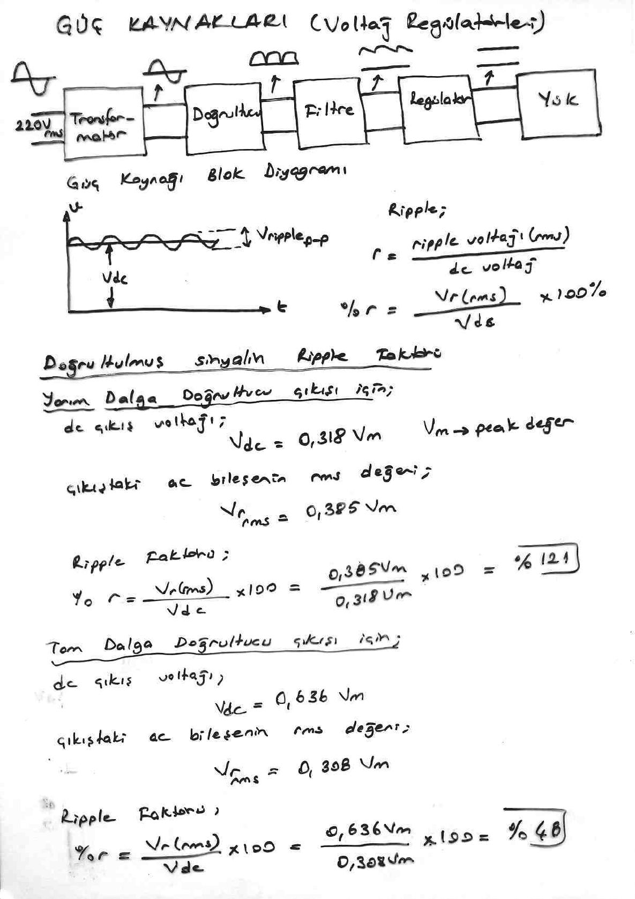
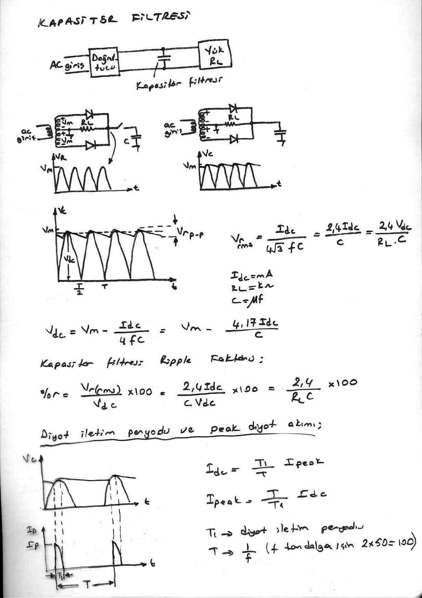
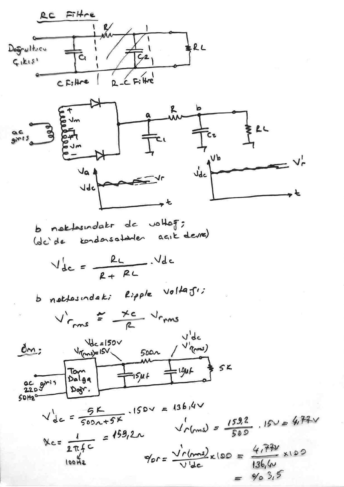
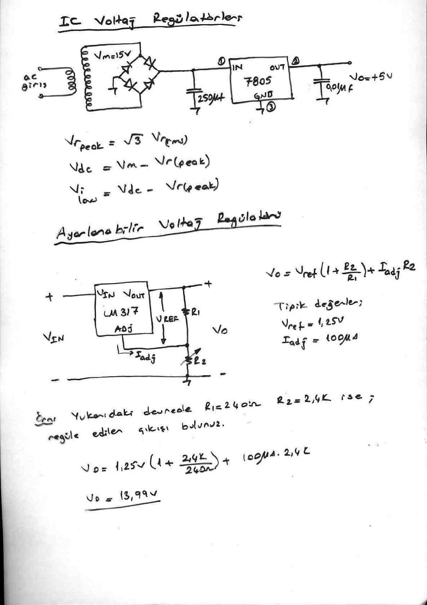

· EEM311
EEM311 Electronics II: Power Supplies, Ripple, Filters, and Voltage Regulators
EEM311 – Elektronik II · 01.10.2013 · 16.10.2026
This post was prepared from the scanned pages of a four-page handwritten lecture note on power supplies (voltage regulators) from the EEM311 Electronics II course at Başkent University. The notes carry no author name or date. The formulas and examples have been transcribed into text; page images are included for the diagrams. The scanned pages can be downloaded as a PDF at the end of the post.
Power supply block diagram
The 220 V (rms) mains voltage passes through the blocks transformer → rectifier → filter → regulator → load in sequence: the transformer steps the voltage down, the rectifier produces a unidirectional (pulsating) voltage, the filter converts it into a rippled dc, and the regulator delivers a constant dc output.
Ripple: The voltage at the filter output fluctuates with a peak-to-peak value V_r(p-p) around its average value V_dc.
- r = ripple voltage (rms) / dc voltage
- %r = (V_r(rms) / V_dc) × 100%
Ripple factor of the rectified signal
For the half-wave rectifier output (V_m: peak value):
- dc output voltage: V_dc = 0.318 V_m
- rms value of the ac component at the output: V_r(rms) = 0.385 V_m
- Ripple factor: %r = (0.385 V_m / 0.318 V_m) × 100 = 121%
For the full-wave rectifier output:
- dc output voltage: V_dc = 0.636 V_m
- rms value of the ac component at the output: V_r(rms) = 0.308 V_m
- Ripple factor: %r = V_r(rms)/V_dc × 100 = 48%
Note: In the notes, the fraction for the full-wave case is written inverted as "0.636 V_m / 0.308 V_m"; the correct form is 0.308 V_m / 0.636 V_m ≈ 0.48. The result (48%) is correct.

Capacitor filter
A capacitor is connected in parallel between the rectifier output and the load (R_L). In a full-wave rectifier with a center-tapped transformer, the output without a capacitor consists of pulses with peak V_m; once the capacitor is added, the output becomes a sawtooth-shaped voltage close to V_m, fluctuating by V_r(p-p).
- V_r(rms) = I_dc / (4√3 f C) = 2.4 I_dc / C = 2.4 V_dc / (R_L C) (I_dc in mA, R_L in kΩ, C in µF)
- V_dc = V_m − I_dc / (4fC) = V_m − 4.17 I_dc / C
- Ripple factor of the capacitor filter: %r = V_r(rms)/V_dc × 100 = 2.4 I_dc / (C V_dc) × 100 = 2.4 / (R_L C) × 100
Note: The coefficients 2.4 and 4.17 are textbook constants calculated for a 60 Hz mains supply (120 Hz full-wave ripple). As stated at the end of the notes, for a 50 Hz mains supply (100 Hz full-wave ripple) the same formulas give V_r(rms) ≈ 1.44 I_dc / C and V_dc ≈ V_m − 2.5 I_dc / C.
Diode conduction period and peak diode current
The diode conducts only during the short time T₁ in which the capacitor recharges; during this time a high peak current (I_peak) flows.
- I_dc = (T₁/T) · I_peak → I_peak = (T/T₁) · I_dc
- T₁: diode conduction period; T = 1/f (f is 2 × 50 = 100 Hz for full-wave)

RC filter
By adding an R–C2 section after the C filter (C1 – R – C2 – R_L), the ripple is reduced further. At point a there are V_dc and V_r; at point b there are V'_dc and a smaller V'_r.
- dc voltage at point b (capacitors are open circuits at dc): V'_dc = R_L / (R + R_L) · V_dc
- ripple voltage at point b: V'_r(rms) ≅ (X_C / R) · V_r(rms)
Example: At the output of a full-wave rectifier with a 220 V, 50 Hz ac input, V_dc = 150 V and V_r(rms) = 15 V. This is followed by an RC filter with C1 = 15 µF, R = 500 Ω, C2 = 10 µF, and R_L = 5 kΩ.
- V'_dc = 5k / (500 Ω + 5k) · 150 V = 136.4 V
- X_C = 1/(2πfC) = 159.2 Ω (f = 100 Hz, C = 10 µF)
- V'_r(rms) = (159.2 / 500) · 15 V = 4.77 V
- %r = V'_r(rms) / V'_dc × 100 = 4.77 V / 136.4 V × 100 = 3.5%

IC voltage regulators
In the example circuit, a transformer secondary with V_m = 15 V is connected to a bridge rectifier, then to a 250 µF filter capacitor and a 7805 fixed regulator (1: IN, 2: OUT, 3: GND); V_o = +5 V is obtained at the output with a 0.01 µF capacitor.
- V_r(peak) = √3 · V_r(rms)
- V_dc = V_m − V_r(peak)
- V_i(low) = V_dc − V_r(peak) (lowest value of the regulator input)
Adjustable voltage regulator
In the LM317 adjustable regulator, R1 is connected between V_OUT and the ADJ terminal, and the adjustable R2 between the ADJ terminal and ground:
- V_o = V_ref (1 + R2/R1) + I_adj · R2
- Typical values: V_ref = 1.25 V, I_adj = 100 µA
Example: In the circuit above, if R1 = 240 Ω and R2 = 2.4 kΩ, find the regulated output.
- V_o = 1.25 V (1 + 2.4k/240 Ω) + 100 µA · 2.4k = 13.75 V + 0.24 V = 13.99 V
